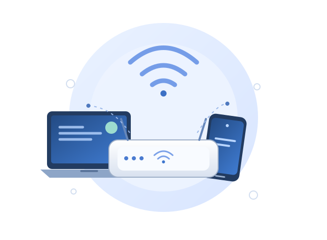

Cara Mengoptimalkan Jaringan WiFi agar Lebih Stabil
Koneksi WiFi yang tidak stabil dapat mengganggu kegiatan belajar, bekerja, rapat online, hingga menikmati hiburan. Kabar baiknya, ada beberapa langkah yang bisa dilakukan untuk membantu meningkatkan kualitas jaringan tanpa harus langsung mengganti seluruh perangkat.

1. Letakkan router di posisi yang tepat
Posisi router berpengaruh terhadap penyebaran sinyal. Sebaiknya letakkan router di area yang cukup terbuka, berada di tengah area yang membutuhkan koneksi, dan tidak terhalang banyak benda. Hindari menyimpan router di dalam lemari, di balik benda logam, atau terlalu dekat dengan lantai.
Jika rumah atau kantor memiliki beberapa ruangan dengan dinding tebal, sinyal bisa melemah sebelum mencapai perangkat. Coba pindahkan router ke lokasi yang lebih terbuka, lalu bandingkan kualitas koneksi di beberapa titik. Untuk area yang luas, access point tambahan atau sistem mesh dapat dipertimbangkan setelah kebutuhan jaringan dievaluasi.
2. Pilih channel WiFi yang sesuai
WiFi bekerja pada kanal atau channel tertentu. Jika banyak jaringan di sekitar menggunakan kanal yang sama, gangguan dapat meningkat, terutama pada lingkungan padat seperti kos, apartemen, dan perkantoran. Pada pita 2,4 GHz, kanal 1, 6, dan 11 sering menjadi pilihan yang diperiksa karena tidak saling tumpang tindih pada konfigurasi kanal 20 MHz.
Gunakan fitur pemindaian WiFi pada perangkat atau aplikasi analisis jaringan untuk melihat kondisi sekitar. Setelah itu, pilih kanal yang relatif lebih lengang dan lakukan pengujian kembali. Jika router mendukung pita 5 GHz, pita tersebut dapat memberikan lebih banyak pilihan kanal dan kecepatan yang baik pada jarak yang sesuai, meskipun jangkauannya umumnya lebih pendek daripada 2,4 GHz.
3. Periksa jumlah perangkat dan penggunaan bandwidth
Banyak perangkat yang aktif bersamaan dapat meningkatkan beban jaringan. Video beresolusi tinggi, unduhan berukuran besar, pencadangan cloud, dan pembaruan sistem dapat menggunakan bandwidth dalam jumlah besar. Akibatnya, aktivitas lain seperti panggilan video atau permainan daring bisa terasa lambat.
Periksa daftar perangkat yang terhubung melalui halaman administrasi router. Putuskan perangkat yang tidak dikenal setelah memastikan bahwa perangkat tersebut bukan milik anggota rumah atau kantor. Jika router mendukung Quality of Service (QoS), fitur ini dapat membantu memprioritaskan lalu lintas tertentu sesuai kebutuhan. Pengaturan sebaiknya dilakukan dengan hati-hati agar pembagian bandwidth tetap adil.
4. Perbarui perangkat dan amankan jaringan
Perangkat lunak router yang sudah lama dapat memiliki masalah kompatibilitas atau keamanan. Periksa situs resmi produsen untuk mengetahui ketersediaan pembaruan firmware dan ikuti petunjuk pemasangan yang sesuai dengan model perangkat. Jangan mematikan router saat proses pembaruan berlangsung.
Gunakan kata sandi WiFi yang kuat dan aktifkan metode keamanan modern yang didukung router, seperti WPA2-AES atau WPA3. Hindari menggunakan kata sandi bawaan yang mudah ditebak. Kata sandi administrator router juga sebaiknya berbeda dari kata sandi WiFi agar pengaturan jaringan tidak mudah diubah oleh pihak yang tidak berwenang.
5. Lakukan pengujian secara bertahap
Setelah melakukan perubahan, uji koneksi dari beberapa lokasi dan pada waktu yang berbeda. Catat kecepatan unduh, kecepatan unggah, latensi, serta apakah koneksi terputus. Lakukan satu perubahan dalam satu waktu agar kamu dapat mengetahui langkah mana yang memberikan hasil paling baik.
Jika koneksi tetap bermasalah, sambungkan laptop ke router menggunakan kabel Ethernet untuk membandingkan koneksi kabel dengan WiFi. Jika koneksi kabel juga lambat, penyebabnya mungkin berasal dari layanan internet, router, atau konfigurasi jaringan. Jika koneksi kabel normal tetapi WiFi bermasalah, pemeriksaan dapat difokuskan pada sinyal, channel, dan access point.
Kesimpulan
Cara mengoptimalkan jaringan WiFi agar lebih stabil dimulai dari langkah sederhana: memperbaiki posisi router, memilih channel yang sesuai, memantau perangkat yang terhubung, memperbarui firmware, dan mengamankan jaringan. Lakukan pengujian sebelum dan sesudah perubahan untuk menilai hasilnya secara objektif. Tidak semua masalah berasal dari WiFi; kualitas layanan internet dan kondisi perangkat juga perlu diperiksa.
Untuk mempelajari topik lain, kunjungi halaman utama website. Kamu juga dapat menambahkan artikel lanjutan tentang dasar jaringan komputer, cara kerja access point, atau pengenalan VLAN agar pembaca mendapatkan pemahaman yang lebih lengkap.